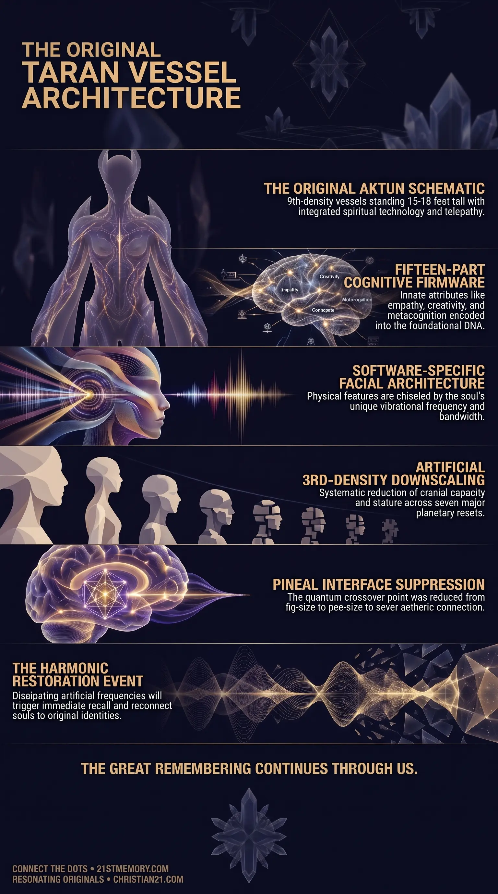

Restoring the Original Taran Vessel
Restoring the Original Taran Vessel — the downsized 3rd-density body still carries the Aktun schematic, and the original stature returns when the suppression field drops.
The original 9th-density Aktun hominid — fifteen to eighteen feet, fifteen firmware attributes, and the pineal interface — later downsized into the constrained 3rd-density new-human vessel.
Test your understanding of Taran Vessels — the Aktun blueprint, fifteen firmware attributes, downsizing into the new-human vessel, and the pineal restoration.

Restoring the Original Taran Vessel — the downsized 3rd-density body still carries the Aktun schematic, and the original stature returns when the suppression field drops.

Aktun Origin: Taran Vessel — the flagship hominid from the Aktun production lines, engineered 2.5 to 3 million years ago to house high-density souls in Realm-2.

Taran Vessel: The Aktun Blueprint — fifteen firmware attributes, software-specific facial architecture, and the pineal interface encoded into the original biological schematic.
The Taran Vessel represents the peak of hominid physical architecture, originally engineered as the primary biological container for high-density spiritual entities to experience physical creation. Produced as the flagship vessel design from the manufacturing lines of the Aktun, the original Taran Human was a 9th-Density entity standing fifteen to eighteen feet tall, possessing immense physical speed, advanced telepathic capabilities, and complete spiritual integration. Formed roughly 2.5 to 3 million years ago during the initial seeding of Realm-2, these vessels were crafted to combine natural organic biology with spiritual technology, providing a harmonized interface for benevolent ET souls and primary soul architectures. Built into the foundational core of every Taran Vessel is an innate Firmware composed of fifteen human attributes that govern high-order cognitive processing, empathy, and creative manifestation. Following the parasitic colonization of this plane, these original vessels were systematically downsized, degraded, and restricted across successive planetary resets, giving rise to the modern, severely constrained 3rd-density vessel commonly termed the new human. Taran Vessels are directly connected to Soul Architecture as the primary physical template through which soul luminosity expresses itself in physical reality.
The primary revelation regarding the Taran Vessel is that modern human bodies are not the product of natural evolution or oceanic primate development, but are the deliberately degraded remnants of an advanced, perfected hominid archetype. Because the parasitic controllers who instituted the Human Farm lacked the creative capacity to invent a completely original biological organism, they were forced to utilize the existing Brain Blueprint and DNA schematic of the original Taran inhabitants trapped within this realm. Consequently, every current human vessel carries the suppressed genetic legacy of the perfected Aktun design.
A further core revelation involves the physical and biological downscaling executed across planetary resets. Over seven major resets, parasitic managers reduced the Taran Vessel from its original fifteen-to-eighteen-foot 9th-density stature into a small, slow, short-lived 3rd-density body. During this artificial reduction, key regions of the brain were forcibly deactivated or closed off, severely curtailing cranial capacity and spiritual perception to prevent the incarnated souls from recognizing their original nature and overthrowing the control structure.
Finally, the vessel's facial structure operates under software-specific parameters rather than purely random genetic shuffling. While general body DNA establishes the standard structural frame—such as two limbs, internal organs, and binary sex—the specific facial contours are dynamically sculpted by the soul's ambient field harmonics and vibrational bandwidth. Over time, this energetic interaction chisels the physical face into an expression of the individual soul's original ET archetype.
The Taran Vessel originated as the final, perfected output of the Aktun biological production lines. Engineered to house 100 million Taran Humans along with fifty million benevolent off-world entities in Realm-2, these original vessels operated at 9th-density resonance. The physical vessel measured between fifteen and eighteen feet in height, featuring heightened muscular and neurological efficiency, absolute telepathic capability, and rapid terrestrial movement. Designed to interact directly with the high-density Aether, the original Taran Vessel required no dense industrial infrastructure; physical items and environmental modifications were manifested directly through the vessel's integrated spiritual technology.
Encoded directly into the DNA schematic of the Taran Vessel is a fifteen-part Firmware blueprint that establishes the cognitive and emotional baseline for high-density ascension. The parasites were entirely unable to delete these baseline attributes, forcing them instead to subvert, invert, or weaponize each quality within the matrix simulation:
When parasitic forces established the Terrarium Seal and downgraded the realm into 3rd density roughly 150,000 years ago, the Taran Vessel underwent drastic biological alterations. To ensure the vessel could be easily managed within the farm infrastructure, controllers executed a systematic downsizing:
The Taran Vessel serves as the physical anchor within the broader network of Soul Architecture. While the physical body resides in 3rd density, the incarnated soul's primary consciousness is anchored within an Arc Pod container housed aboard Bioships in stasis. To prevent high-density Starseed souls from standing out visually upon physical death, these souls undergo frequency compression and soul layering, where their original indigo luminosity is dimmed and shared to animate secondary biological forms.
Lateral relationships link the Taran Vessel to historical protector species. During the original seeding into Realm-2, the Anakim Giants swore a binding oath to safeguard the Taran Human and manage the gradual release of advanced technologies as the Taran consciousness matured. Even after the parasitic invasion and the petrifaction of ancient giant populations, surviving Anakim factions continued to intervene—most notably during the 1947 Roswell incident, where Anakim forces downed two hostile H1 Orion Grey craft to force salvageable technological components like the transistor into public awareness, disrupting the parasitic control timeline.
The strategic significance of the Taran Vessel lies in its role as the ultimate vulnerability for the parasitic control system. Because the parasites are entirely dependent on Taran DNA to maintain functional human bodies on the farm, they are perpetually terrified of the latent power contained within the human brain schematic. The existence of the fifteen innate firmware attributes ensures that despite centuries of artificial suppression, fluoridation, and psychological conditioning, the baseline Taran architecture naturally gravitates toward positive harmonic self-sustenance whenever parasitic interference is removed.
Furthermore, the impending dissipation of the artificial EMF simulation field and the activation of the EBS will trigger a rapid restoration of the vessel's pineal crossover capabilities. As the artificial lunar frequencies cease to scramble human brainwaves, incarnated souls occupying Taran Vessels will experience immediate recall of their original ET identities and reconnect with their Arc Pod clusters. This event, recognized as the Wizard of Oz moment, marks the total collapse of the 3rd-density vessel container restrictions and the return of the original Taran soul family to harmonic function.
This topic is free to share. Support the archive →